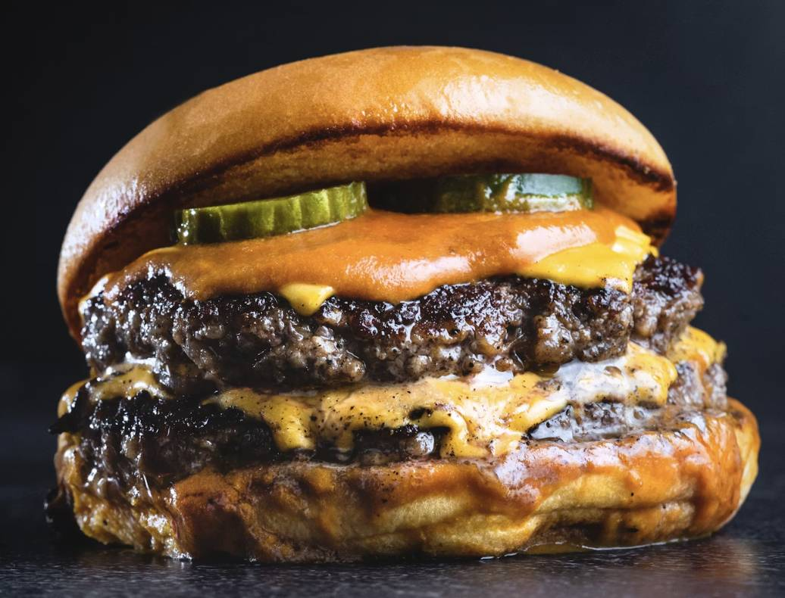

Hamburger Recipe

Description
This classic hamburger recipe is perfect for a quick and delicious meal. With a juicy beef patty, fresh vegetables, and a toasted bun, it's a crowd-pleaser that's easy to make at home!
Ingredients
- 1 pound ground beef
- 1 teaspoon salt
- 1/2 teaspoon black pepper
- 4 hamburger buns
- 4 slices cheese
- 4 leafs lettuce
- 2 tomatoes, sliced
- 1 small onion, sliced
Steps
- In a large bowl, mix the ground beef, salt, and black pepper until well combined.
- Form the meat mixture into 4 equal patties.
- Grill the patties for 3-4 minutes on each side or until they reach your desired level of doneness.
- Toast the hamburger buns on the grill for about 30 seconds on each side.
- Layer the ingredients on each bun: cheese, lettuce, tomato, and onion.
- Serve immediately and enjoy!
Home